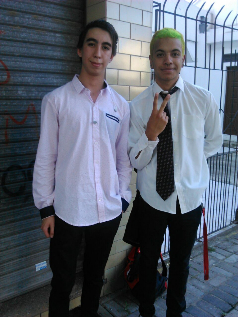

Tengo 19 años, soy de la localidad de Ranelagh en Berazategui. Estudie en una escuela tecnica en la cual me recibi con un titulo de tecnico informatico.
Me gusta caminar y visitar lugares naturales, ver peliculas, series (GOT :3), leer novelas, juntarme con amigos, jugar a los videos juegos en especial online. Escucho musica demasiado variada para definir un genero en especifico.
color relleno=color(255,0,0);
void setup(){
size(400,400);
background(255);
}
void draw(){
stroke(relleno);
ellipse(mouseX,mouseY,50,50);
}
void mousePressed(){
if(relleno==color(255,0,0)){
relleno=color(0,0,255);
}
else{
relleno=color(255,0,0);
}
}
color relleno=color(255,0,0);
void setup(){
size(400,400);
}
void draw(){
background(255);
fill(relleno);
ellipse(mouseX,mouseY,50,50);
}
void mousePressed(){
if(relleno==color(255,0,0) && mouseX>=150 && mouseX<=250
&& mouseY>=150 && mouseY<=250){
relleno=color(0,0,255);
}
else if(relleno==color(0,0,255) && mouseX>=150 &&
mouseX<=250 && mouseY>=150 && mouseY<=250){
relleno=color(255,0,0);
}
}
int xspeed, yspeed;
int xpos,ypos,wdth,x;
void setup() {
size(400,400);
background(0);
xspeed=80;
yspeed=80;
wdth = 90;
x=900;
noStroke ();
xpos=width/2;
ypos=height/2;
frameRate(30);
}
void draw(){
fill ((random (250)),(random (20, 200)),(random (250)));
ellipse(xpos,ypos,wdth,x);
xpos+=xspeed;
ypos+=yspeed;
if(xpos>=width-wdth/2 || xpos<=wdth/2){
xspeed*=-1;
}
if (ypos>=height-x/2 || ypos<=x/2){
yspeed*=-1;
}
}
void setup() {
size(400,400);
frameRate(15);
}
void draw() {
stroke(0);
background(255);
fill(0, 0, 255);
strokeWeight(0);
noStroke();
float t = random(100);
ellipse(random(width), random(height), t, t);
fill(255, 255, 0);
triangle(random(width), random(height), random(width),
random(height), random(width), random(height));
stroke(0, 0, 0);
float y = random(height);
for (int i = 0; i < (int)random(200); i++) {
strokeWeight(random(5));
line(0, y + i*10, width, y + i*10);
}
}